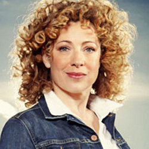

|
River SongRiver Song is a fictional character played by Alex Kingston in the British science-fiction series Doctor Who. River Song was introduced to the series as an experienced future companion of series protagonist the Doctor, an alien Time Lord who travels through time in hisTARDIS. Because River Song is a time traveller herself, her adventures with the Doctor occur out of synchronisation; their first meeting (from the audience's perspective) is his first and apparently her last. In later appearances, River is a companion and romantic interest of the Doctor in his eleventh incarnation, portrayed by Matt Smith. River Song was created by Doctor Who writer Steven Moffat for the show's fourth series in 2008, under the tenure of executive producer Russell T Davies. When Moffat took over Davies' duties as executive producer, he began expanding on the character's background, depicting adventures earlier in River's timeline, upgrading Alex Kingston from a guest star to a recurring actor in the series. Other actresses have subsequently portrayed younger versions of the character. When the character was first introduced, much about her origins remained a mystery. Following the character's initial appearance, Davies had described her as "one of the most important characters" in the narrative, and "vital" to the Doctor's life.[3] In series six (2011), Moffat's episodes unveil more about the character. Born Melody Pond, River is the daughter of the Eleventh Doctor's companions Amy Pond(Karen Gillan) and Rory Williams (Arthur Darvill), alongside whom Kingston had appeared several times in series five (2010). Having been conceived on board the TARDIS as it travelled through the space-time vortex, Melody is born with genetic traits and abilities similar to those of the Doctor's own race, the Time Lords. |
|
Julia Schwartz Ann Marie Skjold |
Content derived from the Doctor Who Wikipedia |